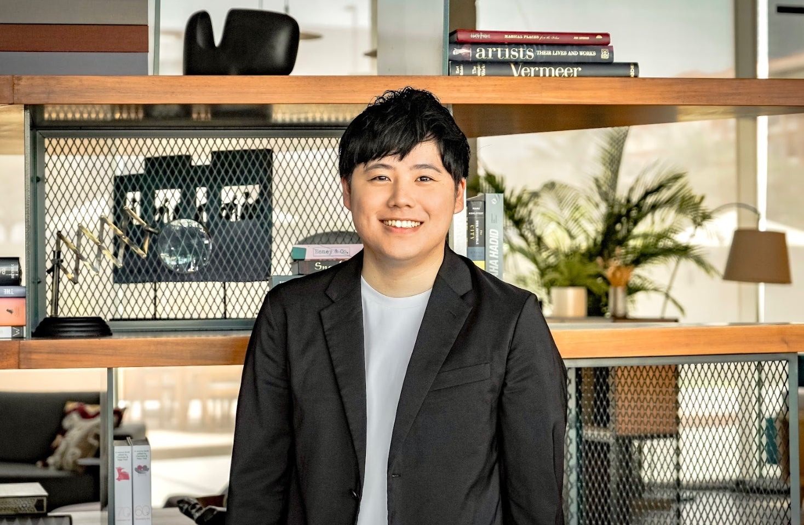
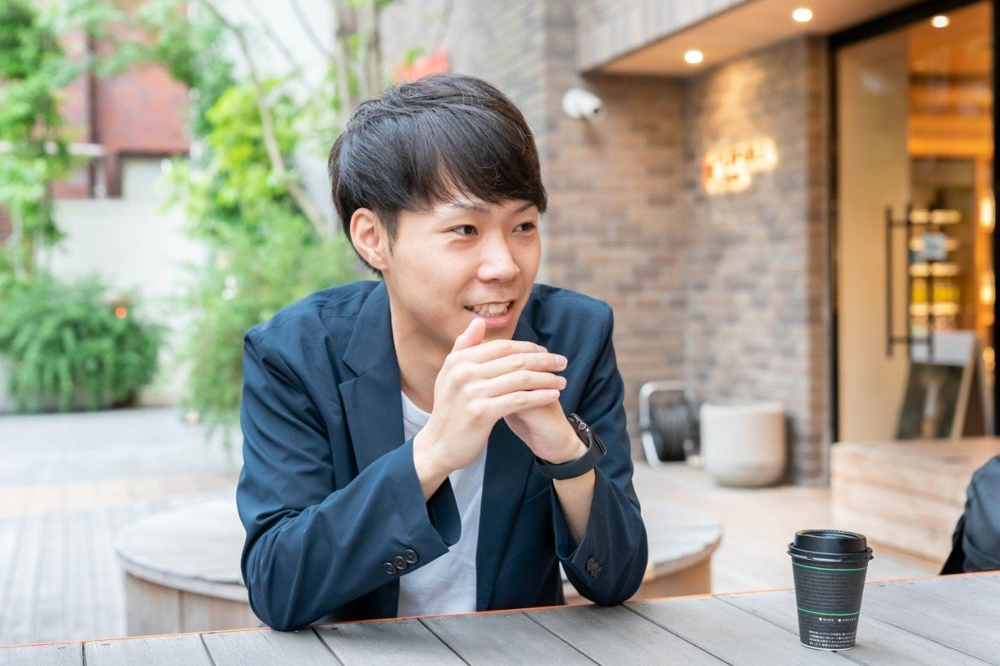
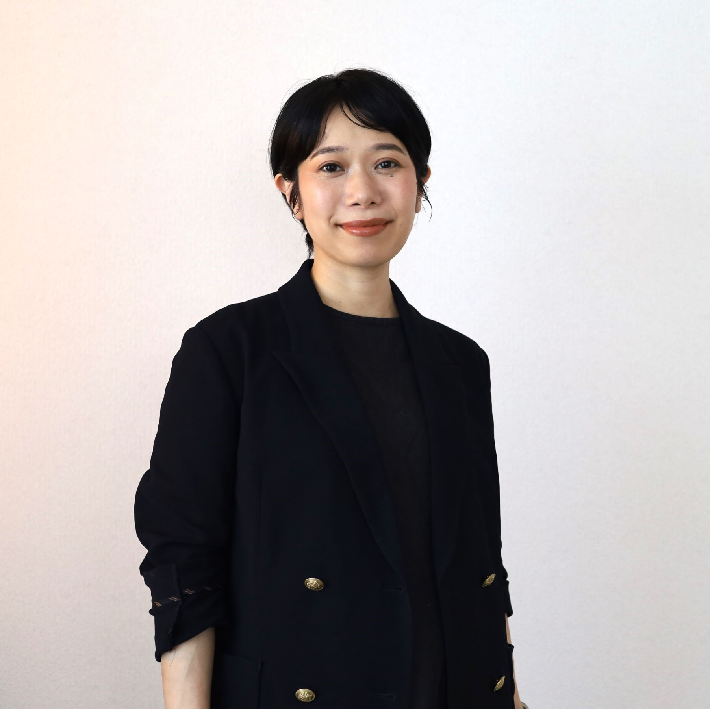
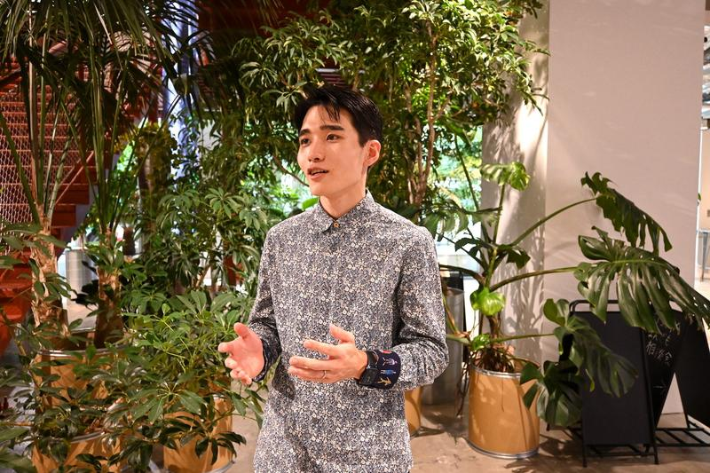
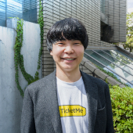
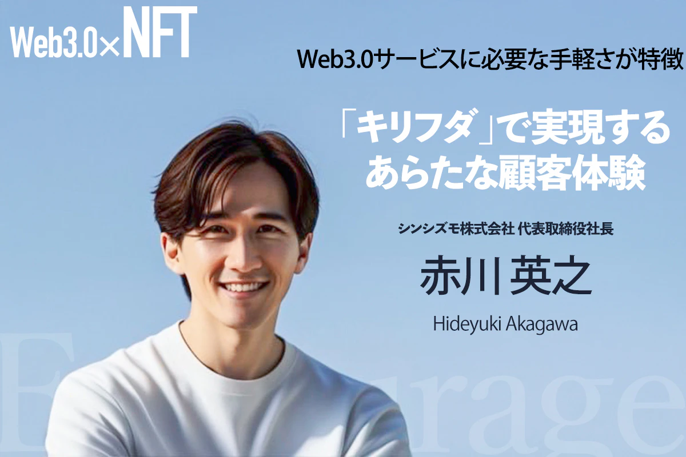
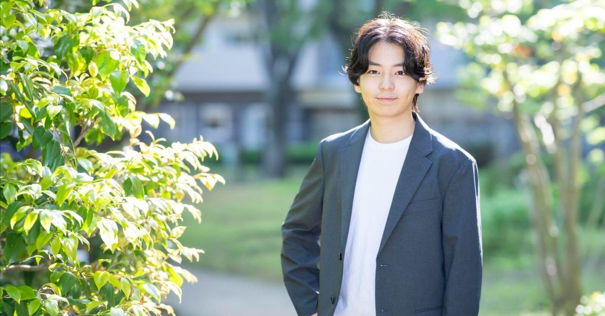
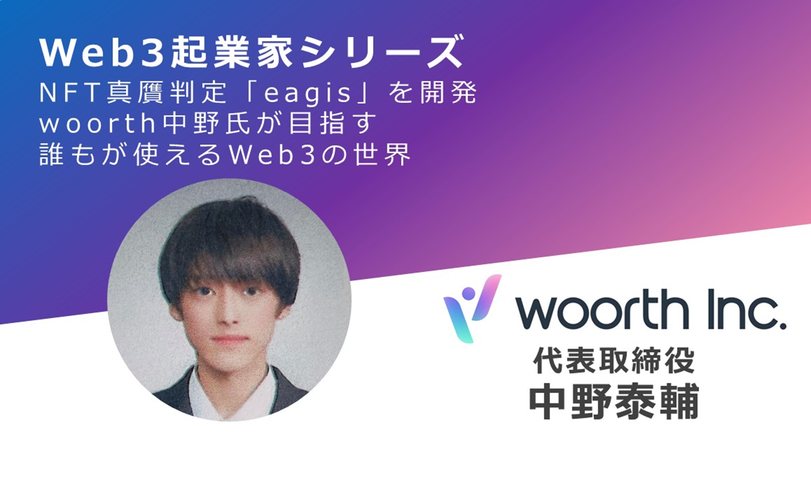

久保 駿貴
株式会社ABABA
代表取締役CEO
就活生向けスカウトサービスを展開。累計約18.2億円を調達（シリーズB含む）。
TORYUMONに関わってきた起業家たちの"いま"
株式会社ABABA
代表取締役CEO
就活生向けスカウトサービスを展開。累計約18.2億円を調達（シリーズB含む）。

株式会社タイミー
代表取締役CEO
スキマバイトマッチングサービスを運営。累計約403億円調達、2024年7月に東証グロース市場へ上場。

Alumnote株式会社
代表取締役CEO
OB・OGネットワーク活用プラットフォームを開発。累計約7.6億円調達、2025年7月にSeries A完了。

株式会社My Fit
代表取締役CEO
オンライン更年期診療「MYLILY」を展開。約4.25億円調達（シード、2024年12月時点）。
株式会社RATEL / 81RAVENS PTE.
代表取締役CEO
RATEL（1.2億円調達）に加え、シンガポール拠点の81RAVENS（約6.3億円調達）も運営。

e-lamp.株式会社
代表取締役CEO
ウェアラブルデバイスからheartbeat matching「ematch」にピボット。3億円調達（ANRIから）。

Bizibl Technologies株式会社
代表取締役CEO
ウェビナーマーケティングSaaSを提供。累計約2.43億円調達。

株式会社ElevationSpace
CEO
宇宙利用サービス（宇宙実験・材料開発）を展開。累計約3.7億円調達（Pre-Series B含む）。

株式会社Follop
代表取締役CEO
インフルエンサーマッチングプラットフォームを運営。累計約1.4億円調達（2023年）。

株式会社Respo
CEO
EC積立決済SaaSを提供。1.2億円調達（Pre-Series A、2025年2月）。

株式会社Yondemy
CEO
子ども向け読書習慣化サービスを展開。約1.3〜1.4億円調達（Pre-Series A）。

株式会社Hagino
代表取締役
アニマルスピリッツ等から6,000万円を調達（シード）。

株式会社メンテモ
代表取締役
車整備・修理サービスプラットフォームを運営。5,200万円以上調達（複数ラウンド）。

Sagri株式会社
代表取締役
衛星データ×AIで農業課題を解決。14カ国に展開。約1.55億円調達。

Tooon株式会社
CEO
フリーランス向け業務管理ツールを開発。Pre-Series A調達済み。

株式会社Amufi
共同代表取締役
不動産CtoC「RoomPa」を展開。East Ventures等から3,000万円調達（シード）。

株式会社サケアイ
代表取締役
日本酒推奨アプリ「Sakeai」を運営。4,000万円調達（株式型CF、2023年11月）。
株式会社Million Production
CEO
累計約2億円超を調達。

株式会社PoliPoli
代表取締役CEO
政策共創プラットフォームを運営。ZHD等から5億円超を調達。

FLICKSHOT FZCO
Founder & Managing Partner
ドバイ拠点のWeb3インキュベーター。1stクローズで約7億円を調達。
iFund株式会社
General Partner
インフルエンサー参画の独立系VC。プレシード〜シード期のtoC領域に投資。

Atlie株式会社
代表取締役
ポイ活アプリ「ビーンズ」やクリエイター向けサービスを運営。

株式会社ラングレス
代表取締役CEO
犬の心理状態を可視化するデバイス「INUPATHY（イヌパシー）」を開発・展開。

株式会社ユーザベース
Business Development
M&Aや事業開発を担当。元F Ventures、Payme関西支社立ち上げを経験。
Phi
Co-Founder & CEO
Web3活動を視覚化するプラットフォームを開発。累計$3.2M以上を調達。

株式会社チケミー
代表取締役CEO
日本初のNFTチケット販売プラットフォームを運営。総額2.2億円を調達。

キリフダ株式会社
代表取締役
Web3特化の総合コンサルティング会社。企業のブロックチェーン導入を支援。

株式会社EbuAction
CEO
Fortnite・Roblox特化のメタバースマーケティング事業を展開。

株式会社woorth
代表取締役
Web3セキュリティツール「eagis」等を開発。Microsoft for Startupsに採択。
YouTuber
クリエイター
YouTuberとして活動中。
株式会社the sense
CEO
韓国ストリートファッションブランド「KsG」を展開。ラフォーレ原宿に常設店舗。
株式会社Unyte
代表取締役
DAO構築・管理プラットフォームを提供。70以上のコミュニティを支援。
フリーランス
フリーランス
フリーランスとして活動中。
僧侶
僧侶
僧侶として活動中。
株式会社アダビト
ファイナンス・組織担当
キャラクタータレント事務所を運営するアダビトに参画。元F Ventures。
深圳スタートアップ
起業家
中国・深圳でスタートアップに挑戦中。